Sculptor — Yukuhashi, Japan
Digital-native sculpture built in Blender, designed for physical manufacture. Two bodies of work in progress: Superposition and Alter of Entropy.
Statement
The work begins with a small, precise figure — crouched, occupied, attending to whatever the immediate problem is. Behind it, thrown against the wall, the shadow refuses to stay the size of the thing that cast it.
Every piece starts as light inside a computer before it is anything else. That isn't a metaphor so much as a working condition: the object is exact and finished long before the material world is asked to catch up to it.
Series — 2024–
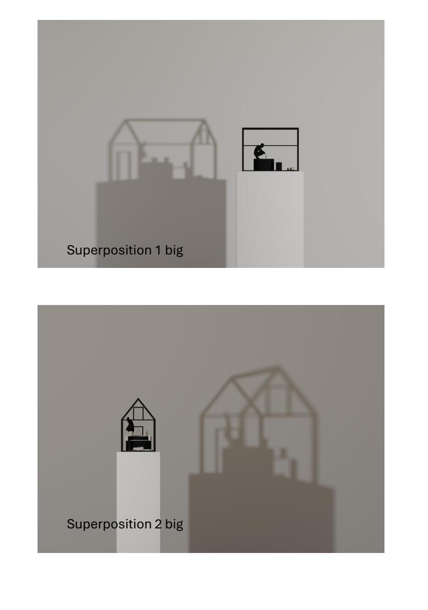
Superposition 1 & 2 — digital renders, Blender. Designed as standalone print works.
A skeletal house frame, a crouched figure, the minimal furniture of an interior life — rendered with an almost architectural restraint. Behind each object, a shadow spreads into something enormous and complicated: a house containing multitudes, unwilling to stay small.
The figure is not a self-portrait. It's a condition — small, occupied, casting something ungovernable it never quite turns around fast enough to see whole.
Series — in development
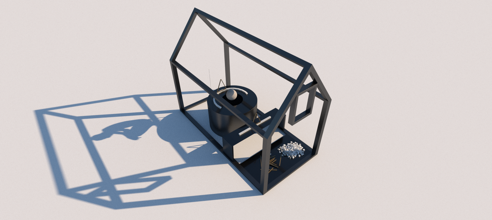
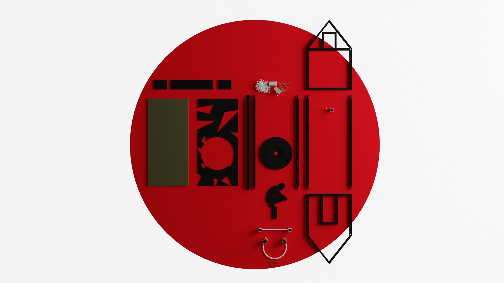
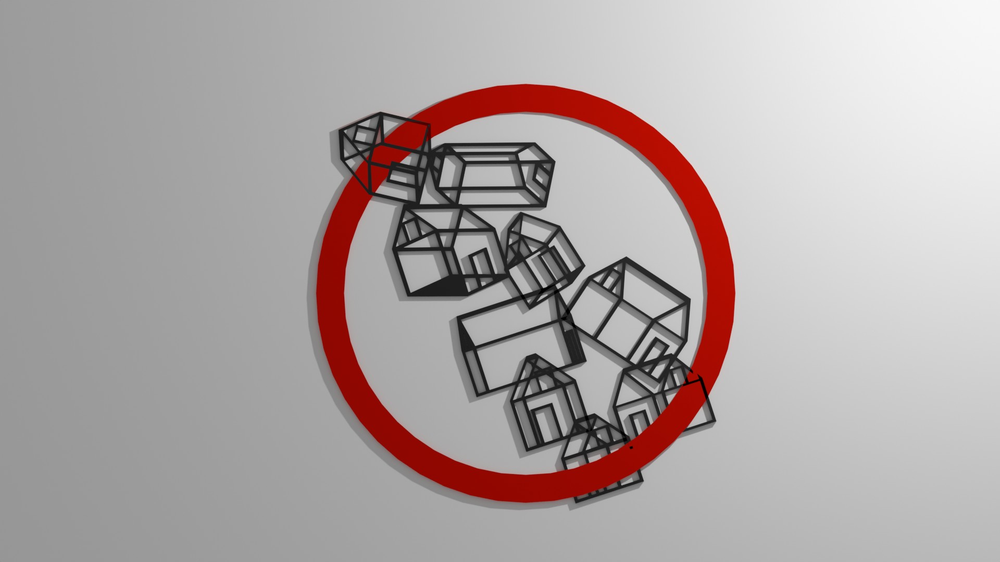
Red-toned wall pieces in CNC-routed oak and 3D-printed elements. House forms orbit a red circle that explains nothing and resolves nothing — a void with the gravity of a fixture. Domestic entropy, arranged like evidence.
Ignorance is blunt. The figure crouches anyway.
Series — in development
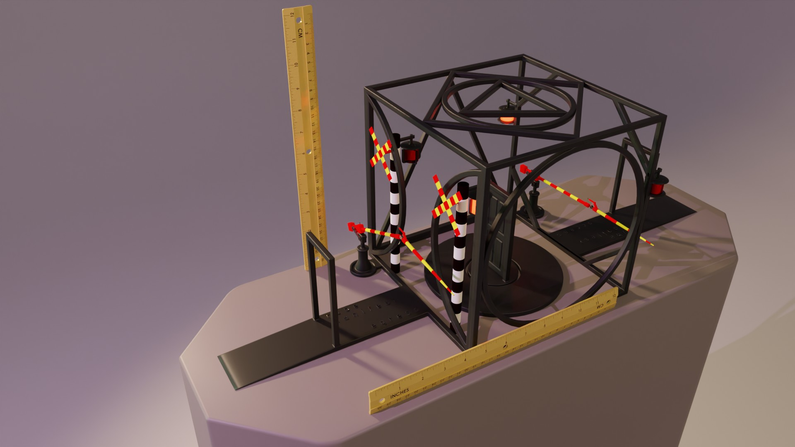
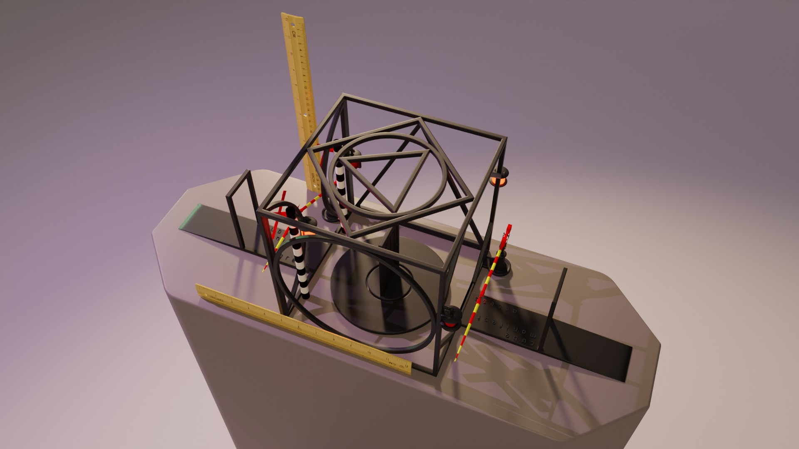
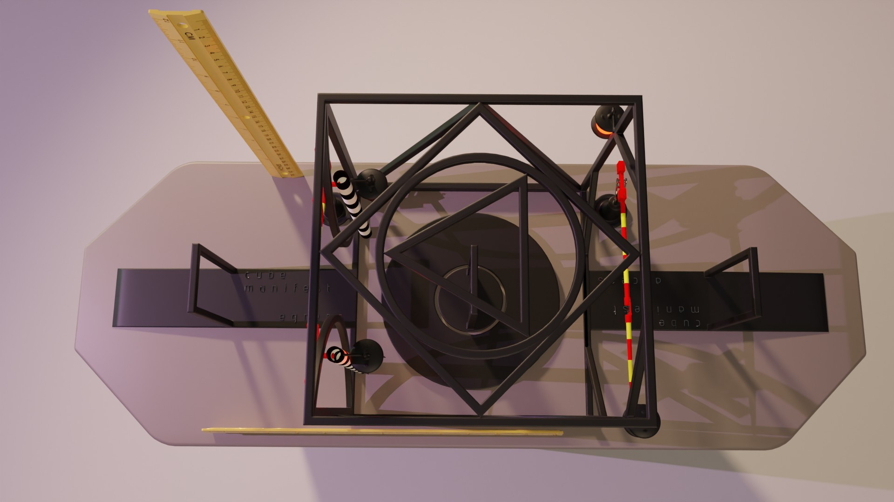
RHA Annual Exhibition, 2024
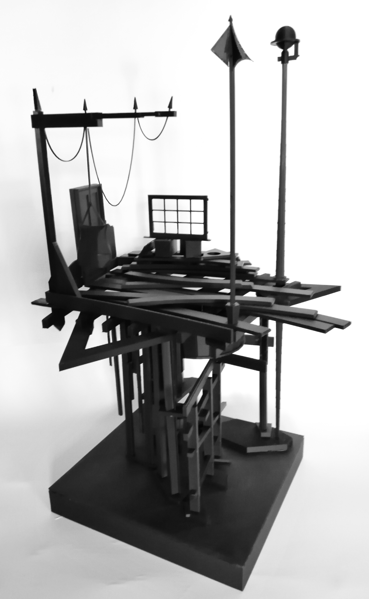
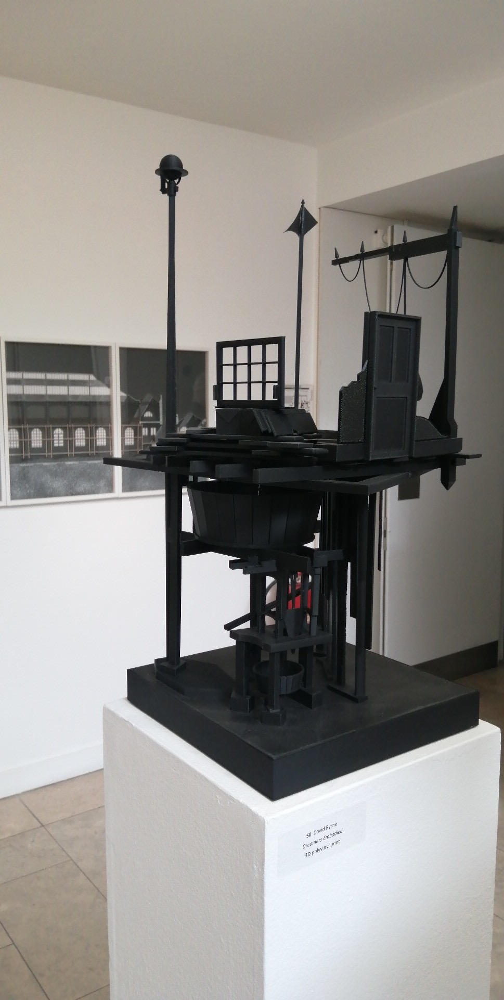
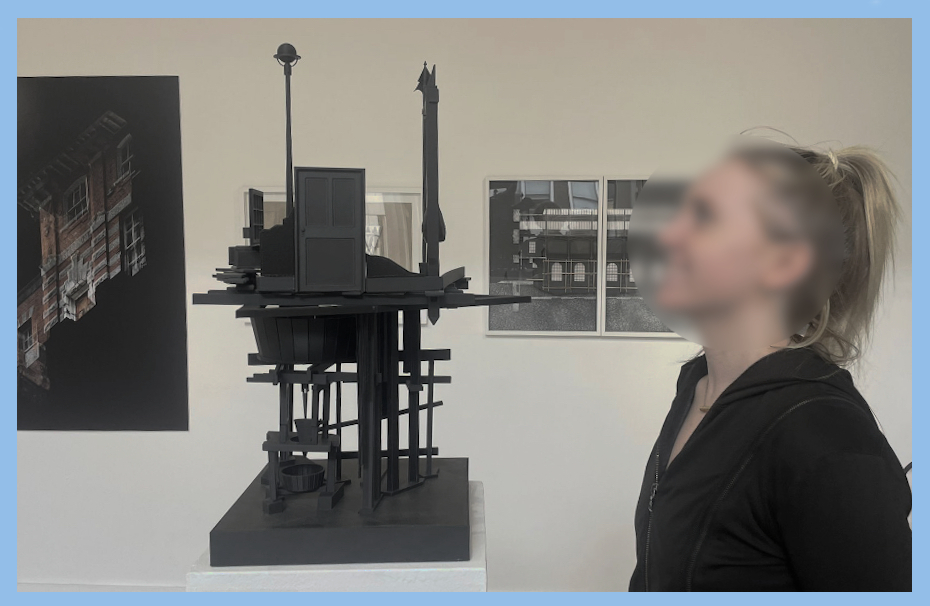
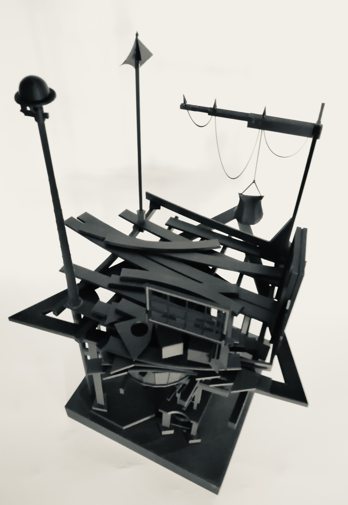
3D polymer print. Shown at the RHA Annual Exhibition, Dublin, 2024.
CV
Contact
For exhibitions, editions, or press enquiries.